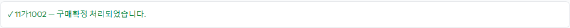

1단계
구매확정 창에서 「재고매입 (바이어 미정)」에 체크합니다
「바이어 / 컨사이니」 바로 아래 노란 칸입니다. 체크하면 바이어 선택 칸과 판매 쪽 금액 칸(총판매가·운임비·환율)이 사라지고, 위쪽에 「매입가」만 남습니다. 차값과 매도비, 딜러 서류·입금정보는 평소처럼 넣습니다. 첨부가 없으면 확정이 되지 않는 것도 같습니다.

차값이 좋아 바이어가 정해지기 전에 먼저 사 두는 경우입니다. 「경매/구매」 구매확정 창에서 「재고매입 (바이어 미정)」에 체크하고 확정하면, 바이어·판매 금액 없이 ERP 재고로 넘어갑니다. 바이어는 나중에 ERP 에서 붙입니다. 단, 담당자 한 사람의 일반재고(바이어 미정으로 사 둔 차) 합계는 2억원까지입니다.
「바이어 / 컨사이니」 바로 아래 노란 칸입니다. 체크하면 바이어 선택 칸과 판매 쪽 금액 칸(총판매가·운임비·환율)이 사라지고, 위쪽에 「매입가」만 남습니다. 차값과 매도비, 딜러 서류·입금정보는 평소처럼 넣습니다. 첨부가 없으면 확정이 되지 않는 것도 같습니다.
체크하면 바로 아래에 「일반재고 상한」 상자가 나옵니다 — 담당자의 지금 일반재고 합계(대수)와 상한 2억원입니다. 지금 합계에 이번 차 매입가(차값 − 매도비)를 더해 2억원을 넘으면 상자가 빨갛게 되고 구매확정이 막힙니다(정확히 2억원까지는 됩니다). 매입대금을 아직 지급하지 않은 차는 합계에 들어가지 않습니다. 막혔으면 바이어를 지정해 일반 매입으로 확정하거나, ERP 에서 일반재고가 팔리거나 바이어가 붙어 합계가 줄어든 뒤 [새로고침]을 누르고 다시 합니다.

「구매확정 처리되었습니다」와 「car-erp 전송 완료」가 뜹니다. ERP 에서는 매입대금을 지급하기 전까지 「지급대기」에, 지급한 뒤에는 「일반재고」에 보입니다. 바이어가 정해지면 ERP 차량 화면에서 바이어와 판매 금액을 넣습니다 — 그때부터 「선적전」으로 옮겨 갑니다.
